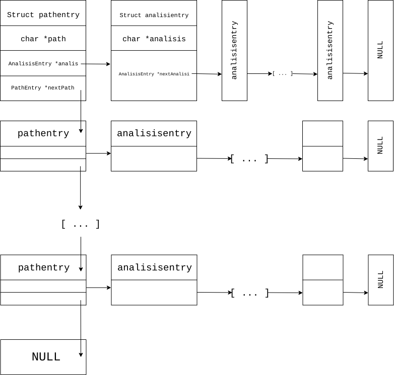

Realizzazione del progetto¶
La realizzazione del codice prodotto ha seguito uno standard preciso ed efficente che ha reso lo sviluppo di quest’ultimo flessibile ed elegante ai fini
di aver un’utility di sistema altamente performante grazie alle potenzialità offerte dal C stesso.
Struttura e architettura del codice sviluppato¶
La struttura del progetto si articola fondamentalmente su 5 file sorgente di estensione .c, a cui seguono altrettanti file di estensione .h, in cui vengono dichiari i metodi da estendere:
main.c: contiene il codice di avvio del progetto. Consente il parse delle opzioni e la corretta apertura dei file diinpute dei file dioutput.datastructure.c: contiene il codice necessario alla gestione della struttura dati impiegata nel progetto per la collezione dei dati relativi ai file monitorati.scan.c: contiene il codice necessario all’inizializzazione della struttura dati tramite la lettura delle informazioni specificate tramite i file di input e output.inputscan.c: contiene il codice finalizzato all’analisi del file diinpute dei file i cui pathname sono specificati nel file diinput. Aggiorna di conseguenza la struttura dati con le informazioni relative ai file monitorati.output.c: contiene il codice finalizzato all’analisi del file dioutputper poter inserire le informazioni contenute al suo interno nella struttura dati specificata in precedenza.
Per l’analisi dei singoli file sorgenti si rimanda alle sezioni dedicate alla spiegazione dei singoli metodi specificati al loro interno.
Le librerie impiegate all’interno del codice sono:
Libreria standard di C: sono stati usati gli header<stdio.h>,<string.h>,<stdlib.h>,<errno.h>,<time.h>.Libreria POSIX C: sono stati usati gli header<unistd.h>,<sys/stat.h>,<limits.h>,<pwd.h>,<grp.h>,<dirent.h>,<getopt.h>.
Struttura dati implementata¶
La struttura dati alla base del funzionamento del progetto è stata definita tramite gli struct pathentry e analisisentry, entrambi definiti in datastructure.h e associati
ai tipi PathEntry e AnalisisEntry definiti tramite il costrutto typedef.
Lo struct pathentry è indirizzato alla definizione di una lista in cui ogni elemento contiene una stringa, associata ad un pathname, il puntatore ad un elemento AnalisisEntry
ed il puntatore ad un elemento PathEntry, l’elemento successivo all’interno della lista. Analogamente lo struct analisisentry è puntato alla definizione di una lista i cui elementi
contentono una stringa associata alle informazioni relative all’analisi di un file ed il puntatore ad un elemento AnalisisEntry, elemento successivo nella lista.
Elementi PathEntry e AnalisisEntry che non contengono informazioni sono associati al puntatore NULL.
Le funzionalità incluse all’interno del file datastructure.h permettono di ottenere puntatori ad elementi vuoti di PathEntry e AnalisisEntry, di aggiungere ad una lista di PathEntry
nuovi elementi tramite il passaggio di stringhe contenenti pathname e le informazioni derivate dall’analisi dei file associati a tali pathname, di verificare che una lista di PathEntry
o di AnalisisEntry risulti vuota, di ottenere gli elementi successivi all’interno di una lista PathEntry o AnalisisEntry dato il puntatore ad un elemento delle due liste e di ottenere
il riferimento al primo elemento della lista di AnalisisEntry associata ad un dato elemento di una lista di PathEntry.
Abbiamo impiegato due istanze della struttura dati definita da PathEntry, una per collezionare le informazioni presenti all’interno del file di output,
utili ad esempio per la gestione dell’opzione -h/--history, ed una per raccogliere le informazioni derivate dall’analisi dei file i cui pathname sono stati
definiti all’interno del file di input. Una volta effettuato il corretto utilizzo delle due strutture dati si procede quindi al loro merge per la successiva
scrittura delle nuove informazioni raccolte sul file di output specificato.
Per ulteriori informazioni si rimanda alla sezione dedicata a datastructure.c, in cui sono presenti le definizioni dei metodi dichiarati in datastructure.h e in datastructure.c.
Essendo la struttura dati alla base del progetto basata su due implementazioni di una lista la sua complessità risulta essere:
O(P)quando è necessario aggiungere o recuperare le informazioni da uno specifico elementoPathEntry.O(P x A)quando è necessario aggiungere o recuperare le informazioni da uno specifico elementoAnalisisEntry.
Dove P rappresenta il numero di elementi PathEntry presenti nella struttura dati e A il numero massimo di elementi AnalisisEntry associati ad un PathEntry.
Implementazione delle funzionalità richieste¶
L’esecuzione del programma porta ad un aggiornamento complessivo delle informazioni contenute all’interno del file output, aggiungendo pathname se non già presenti e
analisi delle informazioni relative ai file referenziati dai pathname presenti e aggiunti. Al termine dell’esecuzione il file di output risulterà pertanto aggiornato e
non interamente sovrascritto. I pathname aggiunti al file di output gestito dal programma sono tutti assoluti per permettere la portabilità di tale file.
Per la gestione delle decisioni dell’utente circa l’uso di file di input e di output che non siano quelli di default si è deciso di assicurare le funzionalità del programma
solo in presenza o in assenza dei pathname associati ad entrambi i file. L’inclusione di un singolo pathname all’interno della sinossi di avvio del programma porterà
all’avvio del programma con l’impiego dei file di input e di output di default.
L’uso dell’opzione -v/--verbose porterà alla stampa sullo standard output di informazioni circa i file analizzati, quali il loro pathname relativo (che diventa assoluto nel caso il file
analizzato sia un file referenziato da un link), l’eventuale natura di link o di directory e la corretta riuscita dell’operazione di analisi delle informazioni.
L’implementazione delle opzioni -s/--stat e -r/--report risulta la medesima e consiste nella stampa sullo standard output delle informazioni richieste alla fine dell’elaborazione generale.
L’uso dell’opzione -h/--history, seguita dal pathname del file di cui si vuole ottenere la cronologia, porterà alla stampa sullo standard output delle informazioni relative al file associato a tale pathname.
Se il pathname non è presente all’interno del file di output gestito dal programma verrà effettuata una notifica sullo standard output di tale mancanza. Non sono ovviamente incluse le informazioni
aggiunte tramite l’esecuzione del programma in corso.
L’implementazione di -u/--user e -g/--group consiste in un filtro effettivo su quelli che sono i file da monitorare e di cui aggiungere informazioni nel file di output.
L’inclusione di un file all’interno dell’operazione di analisi effettuata dal programma, in presenza di tali opzioni, porta alla stampa sullo standard output del pathname assoluto del file incluso nell’analisi
e delle relative informazioni collezionate.
Il medesimo discorso si applica anche all’implementazione di -l/--length.
Infine, per l’implementazione di --noscan si è deciso di effettuare comunque l’operazione di popolamento della struttura dati con le informazioni derivate dal file di output evitando ogni tipo
di operazione di analisi su ulteriori file, come quelli specificati dai pathname presenti nel file di input con conseguente popolamento della struttura dati dedicata,
e portando alla stampa sullo standard output delle informazioni presenti all’interno della struttura dati riferita al file di output al termine delle operazioni del programma.
Makefile¶
Il make è un’utility, sviluppata sui sistemi operativi della famiglia UNIX, ma disponibile su un’ampia gamma di sistemi, che automatizza il processo di creazione di file che dipendono da altri file, risolvendo le dipendenze e invocando programmi esterni per il lavoro necessario.
Tale utility nel nostro caso è stata utilizzata per la compilazione di codice sorgente in codice oggetto, unendo e poi linkando il codice oggetto
in un programma eseguibile chiamato filestat.
Essa usa file chiamati makefile per determinare il grado delle dipendenze per un particolare output, e gli script
necessari per la compilazione da passare alla shell.
I task che mette a disposizione sono i seguenti:
make filestat: converte il codice sorgente realizzato, con le librerie a lui annesse, in un codice oggetto eseguibile lanciando il comando./filestatmake clean: elimina il contenuto delle directory indicate al suo interno per ottenere sempre un ambiente di lavoro pulito e privo di file obsoletimake test: generazione della cartella principalefolder_testingin grado di dare all’utente la possibilità di testare il corretto funzionamento dell’utilityfilestat
Test relativi al corretto funzionamento¶
Per avere una stima rispetto al corretto funzionamento del codice sono stati effettuati, in primo luogo,
dei test molto spartani mediante i comandi ls -l, du -sh file_path e utilizzando l”explorer di sistema fornito dall’OS.
Quest’ultimi ci restituivano infatti le informazioni corrette rispetto ai dati che analizzavamo, e in
maniera banale, li confrontavamo con quelli che l’utility produceva. Una volta confermato il corretto funzionamento
dell’utility si è deciso quindi di produrre una script per bash che fosse in grado di generare in maniera del tutto
casuale file, link e directory, che a loro volta contenevano altrettanti elementi, per testare in maniera definitiva
l’utility stessa e dimostrare in maniera oggettiva il suo funzionamento.
Da questa premessa nasce infatti folder_testing.sh.
Lo script in questione, disponibile all’interno della main direcotry del progetto, attinge a risorse di sistema localizzate
in /dev/urandom per produrre dei contenuti di natura random relativi ai nomi dei file e delle directory e
per popolare il loro contenuto.
L’esecuzione di tale script quindi genera una nuova direcotry folder_testing al cui interno sarà possibile
trovare i file - e le direcotry - nati da tale generazione.
Per avviare tale processo sarà necessario lanciare il comando:
make test
Infatti all’interno del Makefile di cui si è parlato nella sezione relativa a codesto argomento è possibile reperire tale informazione.
È interessante poi vedere come l’implementazione e il lancio di tale script produca subito un risultato tangibile che attesti il numero di file e directory generate, così come il numero di link presenti e in particolar modo la somma complessiva del peso di tali file.
Di seguito è possibile apprezzare la bontà e la comodità di tale script:
./folder_testing
├── [ 4096] ICcJo
│ ├── [ 4096] 2ymehX
│ │ └── [ 4096] QP
│ │ ├── [ 4026] 8qR1g46s.bin
│ │ ├── [ 16086] bdkx0.bin
│ │ └── [ 3837] ezK6fiUW3dAR.bin
│ ├── [ 4096] 87
│ │ ├── [ 4096] QP
│ │ ├── [ 2109] tdzY.bin
│ │ └── [ 16310] YpdiX.bin
│ └── [ 4096] JmqQ
│ └── [ 4096] QP
│ ├── [ 3652] Prdg0.bin
│ └── [ 861] yMutQoBsI.bin
├── [ 4096] Si1
│ ├── [ 4096] Aw
│ │ ├── [ 4096] 0BxaN
│ │ │ ├── [ 6707] nq.bin
│ │ │ └── [ 11253] pWIsm.bin
│ │ ├── [ 4096] aG
│ │ │ └── [ 9555] ZbioiWDOw.bin
│ │ ├── [ 4096] h3n1
│ │ │ └── [ 2694] 8m.bin
│ │ ├── [ 4096] rFes
│ │ │ ├── [ 19273] RRP.bin
│ │ │ └── [ 8035] YpaCzp.bin
│ │ └── [ 677] QT0Dwlb3.bin
│ ├── [ 4096] fkXD
│ │ ├── [ 4096] 0BxaN
│ │ │ └── [ 2503] aIqEChA.bin
│ │ ├── [ 4096] aG
│ │ │ └── [ 1507] G5MF0.bin
│ │ ├── [ 4096] h3n1
│ │ │ └── [ 3017] 1YF3kYej9P.bin
│ │ ├── [ 4096] rFes
│ │ ├── [ 6573] 07b.bin
│ │ └── [ 3764] qBbF.bin
│ ├── [ 4096] l jPwu3
│ │ ├── [ 4096] 0BxaN
│ │ │ ├── [ 9030] h5FDXIsn.bin
│ │ │ └── [ 2658] XomM4.bin
│ │ ├── [ 4096] aG
│ │ │ ├── [ 2980] QUWYJY.bin
│ │ │ └── [ 10209] RgziPE7jj.bin
│ │ ├── [ 4096] h3n1
│ │ │ └── [ 3405] xKFZ6j.bin
│ │ ├── [ 4096] rFes
│ │ │ ├── [ 11185] 17s.bin
│ │ │ └── [ 6144] uJW1U.bin
│ │ ├── [ 8663] Df8rs.bin
│ │ └── [ 12494] Vqo8R.bin
│ ├── [ 4096] M F
│ │ ├── [ 4096] 0BxaN
│ │ │ └── [ 14186] rCt35X.bin
│ │ ├── [ 4096] aG
│ │ │ └── [ 359] j0Bl7jx.bin
│ │ ├── [ 4096] h3n1
│ │ │ ├── [ 17973] SE4XX8ExlK.bin
│ │ │ └── [ 4964] sfiq0Q.bin
│ │ └── [ 4096] rFes
│ │ └── [ 13436] P9hWuujV.bin
│ ├── [ 1663] G6G0n8W7.bin
│ └── [ 10078] RjpHS.bin
├── [ 7] link_0 -> Mru.bin
└── [ 5795] Mru.bin
28 directories, 37 files
Dimensione totale dei file: 376452 ./folder_testing
Dopo aver lanciato tale comando infatti basterà modificare il percorso da analizzare all’interno del file di input fornito per poi confrontarle con quelle restituire dall’utility prodotta.